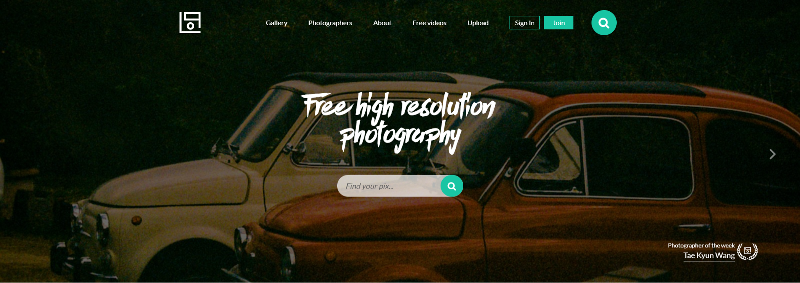
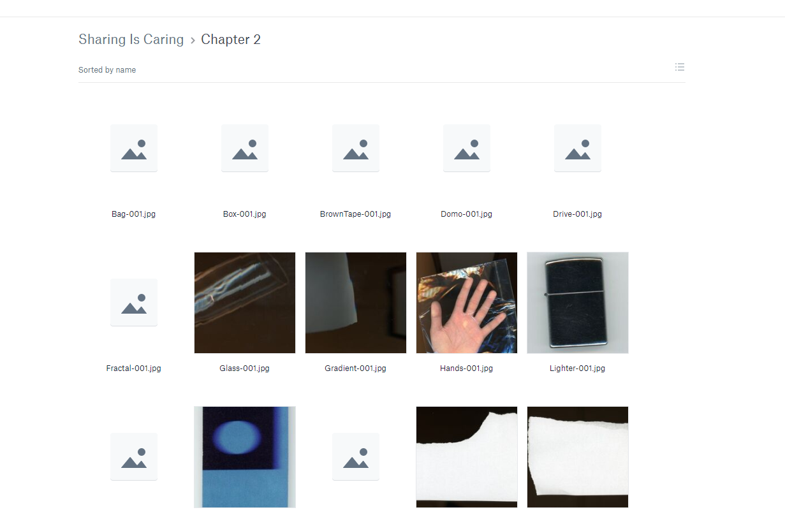
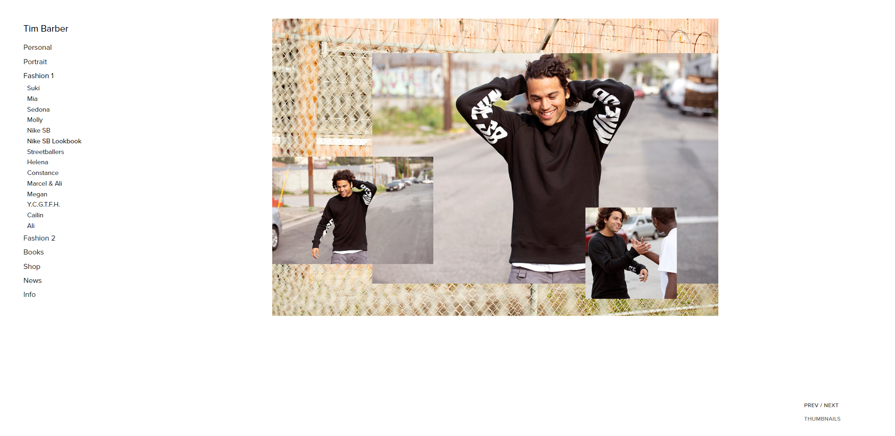
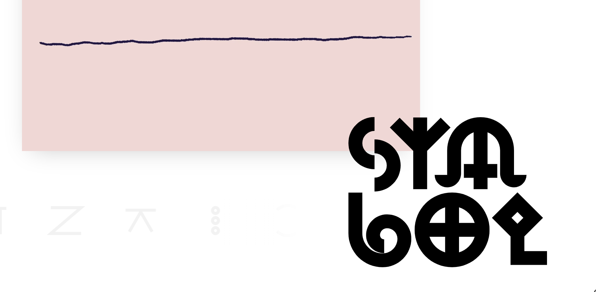

photographic inspiration and other resources - findings week of 13.10.2019
Hello! hope you're doing well. recently I've
been finding myself in need of photographic scrap material. I've
been practicing making collages, and eventually I found every source
I needed and more. so, here are some things I've found.
number one: life of pix
life of pix is a resource for free, no-copyright high-quality photography. in this way, it's similar to sites like unsplash, but there's just something special about life of pix. maybe it's the gorgeous website design, or the 'photographer of the week' feature, or the instagram-esque feed on the front page, or...you get my point. it's just a really well-executed play on the 'public domain image library' idea, which is definitely not new, but can always see improvement and innovation.
number two: sharing is caring
sharing is caring is just the name of a folder in rory dewar's dropbox. it is full of useful images, though.
the images are all free to use and are, as rory describes them, "some unnecessarily high res free textures of random things". can resolution ever really be "unnecessarily high"? I don't think so. oh by the way, I discovered this person through their work on phantogram's mister impossible.
number three: tim barber's nike sb lookbook
tim barber's website is a large portfolio of masterful photography work, but I'm biased toward their work with nike sb (because I'm into skating).
just to be clear, I'm not presenting this link as a resource like the other links in this post so far. this is merely something I used as a source of inspiration.
most of the images are of pro skaters — wearing nike sb clothing — overlaid on images of various scenery and objects. (it's really interesting that I found this right as I was doing research on collage technique, by the way.) the collection of images is meant to showcase nike sb merchandise, of course, and it does so in a really, really elegant way, I think.
number four: emotive brands' art of symbols
here's another learning / inspiration resource. created by emotive brand as a part of the one hundred day project, art of symbols explores ancient logographic design and how it has impacted modern design.

emotive has actually written a great blog post on the project and
its goals and outcomes, so check that out
here.
Starting this month, I think I'll start
putting out more blog posts. shorter posts, but more often, and with
more topics. thanks for reading, see you next time!
currently listening to:
-
theres a halo around the moon
by
black dresses
-
air on line
by
anamanaguchi
-
oh mandy
by
spinto band
-
sigmund - tpz overheat remix
by gram, remixed
by t+pazolite
-
melt
by
tk from 凛として時雨
and
suis from ヨルシカ